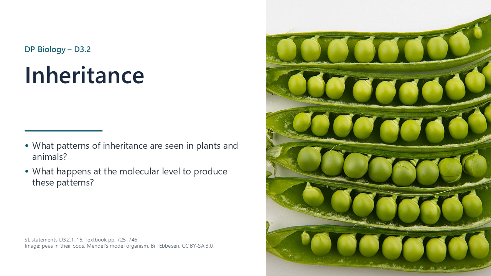
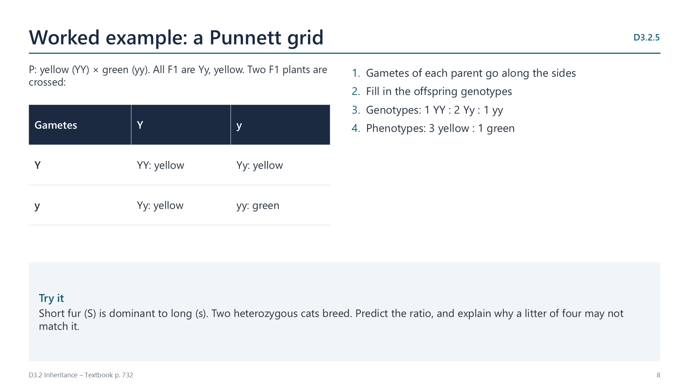
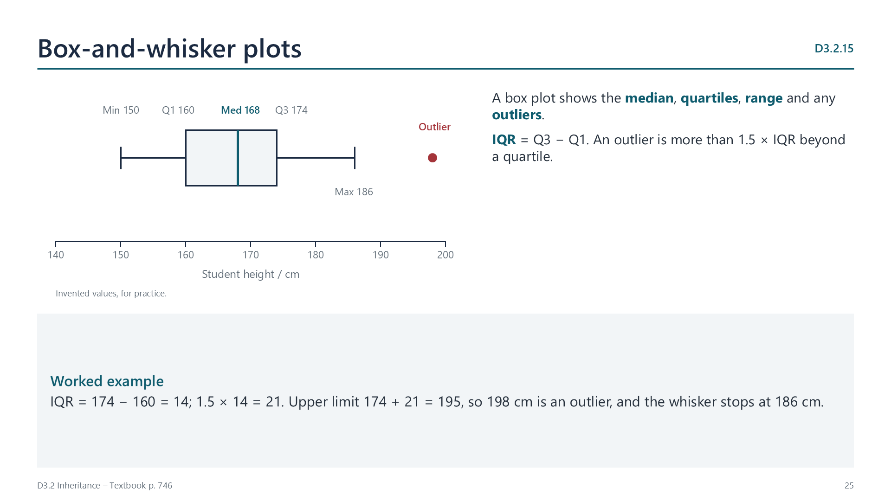
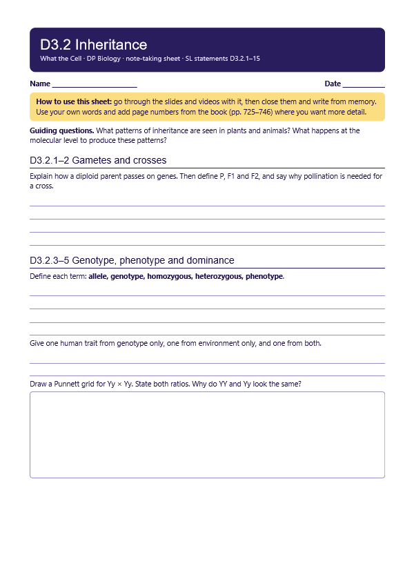
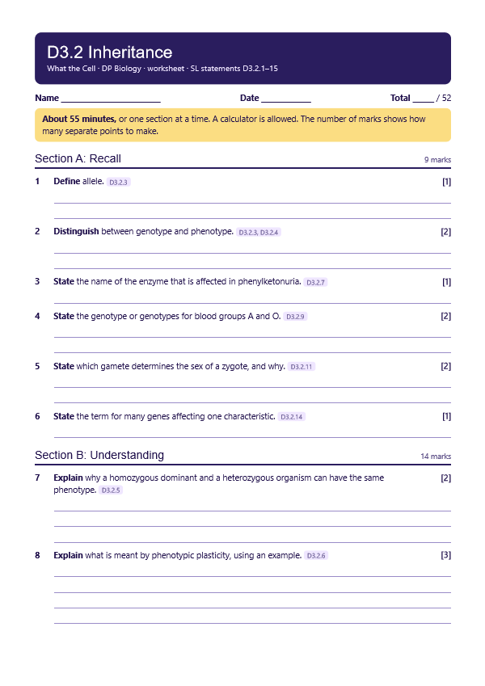

Gametes and zygotes
p. 725Parents make haploid gametes, with one copy of each gene, and these fuse to form a diploid zygote, with two copies of each autosomal gene. This pattern is common to all eukaryotes with a sexual life cycle.

Written for this site from the course textbook and class slides, with page references for each statement. The chapter is on pages 725–746 of the course textbook. Image credits are on slide 32.
Parents make haploid gametes, with one copy of each gene, and these fuse to form a diploid zygote, with two copies of each autosomal gene. This pattern is common to all eukaryotes with a sexual life cycle.
Pollen contains male gametes and female gametes are in the ovary, so a cross needs pollination. Peas make both on one plant, so they can self-fertilize. The parents are the P generation, their offspring are F1, and the offspring of F1 are F2. Crosses are widely used to breed new varieties.
A gene influences a characteristic, and an allele is a version of a gene. The genotype is the combination of alleles inherited. It is homozygous if the two alleles are identical, and heterozygous if they differ.
The phenotype is the observable traits, from genotype and environment. ABO blood group depends on genotype only, a surgical scar on environment only, and height on both.
A dominant allele has the same effect whether homozygous or heterozygous. A recessive allele has an effect only when homozygous. YY and Yy look alike because the dominant allele usually codes for a working protein, and one copy gives enough.
Crossing two heterozygotes gives a 3 : 1 phenotype ratio.

Organisms can develop traits suited to their environment by varying gene expression. The genotype does not change, and the effect may be reversible, as when skin darkens in sunlight and then fades.
PKU is a recessive condition, due to a mutation in an autosomal gene for the enzyme that converts phenylalanine to tyrosine. Without it, phenylalanine builds up and can damage the developing brain. Babies are screened after birth, and a low-phenylalanine diet prevents most harm.
A gene pool is all the alleles in a population. SNPs create new alleles, so any number of alleles of a gene can exist in a gene pool. An individual still inherits only two.
| Group | Genotypes |
|---|---|
| A | IAIA or IAi |
| B | IBIB or IBi |
| AB | IAIB |
| O | ii |
In incomplete dominance, heterozygotes have an intermediate phenotype: red and white Mirabilis jalapa give pink. In codominance, they have a dual phenotype: IAIB gives group AB. Crossing two heterozygotes gives a 1 : 2 : 1 ratio.
All eggs carry an X, and half of sperm carry a Y. So the sex chromosome in the sperm determines whether a zygote develops certain male-typical or female-typical characteristics. The X chromosome carries far more genes than the Y.
The recessive allele Xh is on the X chromosome. Males have only one X, so one copy causes the disease. A carrier mother (XHXh) and an unaffected father (XHY) have a 1 in 2 chance that a son is affected.
Close relatives are more likely to carry the same recessive allele. This is the genetic basis for rules in many societies against marriage between close relatives.
ABO blood group is a discrete variable, and skin colour is a continuous one. Polygenic traits are affected by many genes, each with a small effect, often with the environment as well. The centre of a distribution can be described by its mean, median and mode.

A plot shows outliers, minimum, first quartile, median, third quartile and maximum. A value is an outlier if it is more than 1.5 × IQR above Q3 or below Q1.
Select a video to play it here. Select it again to close it.
Print this guide and complete it as you work through the slides and videos. It asks for your own explanations, so close the notes while you try each section.

The self-check needs JavaScript to run.
A printable worksheet covering all fifteen statements, from quick recall to crosses, data and a longer answer. It has 52 marks and takes about 55 minutes, or you can do one section at a time.
Your teacher has the mark scheme.

You will need: Genetic barley seeds from a heterozygous cross, two petri dishes, filter paper, water, a lamp or window, a dark box
Safety: Low risk. Wash hands after handling seeds, and do not eat them.
Carry this out with your teacher's supervision and follow your school's lab rules.
Mendel's large counts of pea plants revealed ratios that small samples would have hidden.
Statistician R. A. Fisher argued that Mendel's data fit the ratios suspiciously well. Consider what this means for trust, and for how data are recorded.
Predict first, then check. Each one opens on the Think deeper pages.
Summarised in our own words. Use each code to find the exact wording in your textbook or the IB subject guide.
© 2026 Akash Parthi Bendran. Please ask before using or sharing any resources from this site: see permission to use.